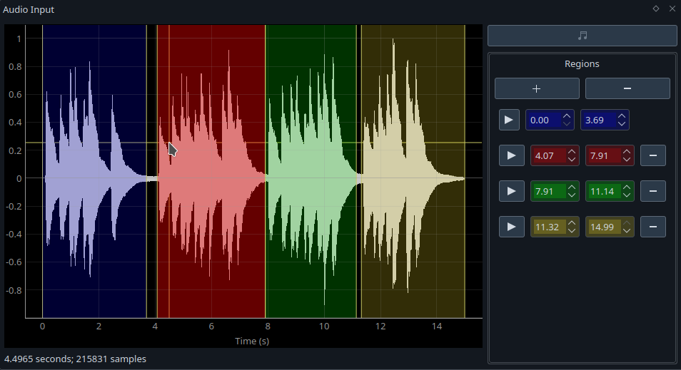
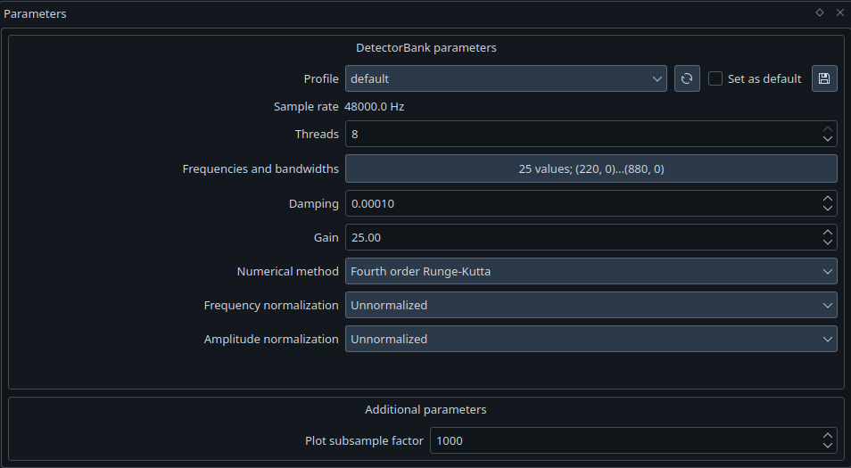

User Guide
There are three panels in this app: Audio Input and Parameters on the left and Output on the right.
 |
|---|
| Application window with analyis of an audio file |
Loading an audio file
|  |
|---|
| Audio file with four regions. The current mouse position is given under the plot. |
Use the button in the top right of the Audio Input panel to select an audio file. Note that it must be a '.wav' file.
Performing analysis on a large audio file can consume a lot of RAM, so you can select regions that you'd like to analyse. By default, when you load audio, a region spanning the entire file will be added. You can resize or move it by clicking and dragging or by setting values directly in the region list.
New regions can be added with the '+' button. Individual regions can be removed with their '-' button or by clicking on it then pressing the 'Delete' key. The 'remove' button at the top of the list will remove all the regions, except the first. There must always be at least one region. Regions can also be added or removed by right-clicking on the plot and selecting the desired operation from the context menu.
You can listen to a region by clicking its 'Play' button. (NB this feature is currently only available if you are using Qt5, not Qt6.)
You can zoom in on the plot of the audio file by scrolling on it and pan by clicking and dragging it. To zoom or pan on one axis, scroll or drag on that axis. After interacting with the plot, you can reset the view by clicking the 'A' button in the bottom left.
Setting DetectorBank parameters
|  |
|---|
| Parameters for analysing the audio |
When you load an audio file, the sample rate will automatically be filled in in the Parameters panel. The remaining values, with the exception of the frequencies and bandwidths, are set to default values.
'Threads' is the maximum number of threads to use when running the analysis. This defaults to the number of cores on your computer.
'Damping' determines the relaxation time of the detectors. A sensible range is 0.0001 to 0.0005. Increasing the damping factor also increases the minimum bandwidth of a detector. The table below shows the minimum possible bandwidth for detectors at five damping factors from 0.0001 to 0.0005, at two common sample rates: 44.1kHz and 48kHz.
| Damping | Min. bandwidth (sr=44100) | Min. bandwidth (sr=48000) |
|---|---|---|
| 0.0001 | 0.850 Hz | 0.922 Hz |
| 0.0002 | 1.688 Hz | 1.832 Hz |
| 0.0003 | 2.528 Hz | 2.752 Hz |
| 0.0004 | 3.360 Hz | 3.660 Hz |
| 0.0005 | 4.200 Hz | 4.860 Hz |
'Gain' scales the output. You can use this to keep the output values in a sensible range. (See also: amplitude normalisation.)
'Numerical method', 'Frequency normalisation' and 'Amplitude normalisation' are described here. The default values are Fourth order Runge-Kutta for the numerical method and no frequency or amplitude normalisation.
Selecting frequencies and bandwidths
| Dialog window for setting frequencies and bandwidths of the detectors |
There are three ways to set the frequencies. The first, as illustrated above, is to set the note range (calculated with A4=440Hz).
The second option, 'Equation', allows you to set the values from the following equation:
where \(f_{ref}\) is a reference frequency (e.g. 440Hz), \(EDO\) is the number of divisions per octave (typically 12), and \(n_0\) and \(n_1\) are integers that define the start and stop steps.
Finally, you can manually enter frequency values in the table on the right. Use the buttons at the bottom to add or remove rows.
There are two options to set the bandwidth: setting a constant bandwidth for all detectors or manually entering values in the table. Note that 0Hz will default to the minimum possible bandwidth for that detector, given the other chosen parameters. See the table above for the minimum bandwidth values.
Saving and loading profiles
Rather than entering your chosen parameters each time you use the app, you can save and load parameters as profiles. Use the 'Save' button to save the current parameters and the drop-down menu to load them. You can set a chosen profile as the default with the check box.
Subsample factor
As noted above, analysing an audio file can consume a lot of RAM. To help reduce this, you can set a factor to subsample the results by when plotting. The default value is 1000.
Analysing the audio
| Analysis of the four selected audio regions |
Once you've loaded an audio file and chosen your parameters, you can perform the analysis by clicking the 'Run' button at the top left of the Output panel, pr pressing F5.
A plot will be created for each region. The title of the plot is the region time range and it is displayed in the same colour as the region.
Hovering the mouse over a line in a plot will highlight that line. Under the plot, the time at the mouse point is displayed, along with the frequency represented by the selected line and its amplitude at the mouse point. When a line is hovered, it is also highlighted in the legend under the plots, e.g. the in the bottom left, the blue line showing the response at 440Hz is highlighted in the plot and the legend.
By default, the plots are shown in a 2x2 grid, spanning as many pages as necessary. You can change the grid dimensions by setting the rows and columns at the top of the Output panel.
The button at the end of the top toolbar allow you to remove all plots from the panel.